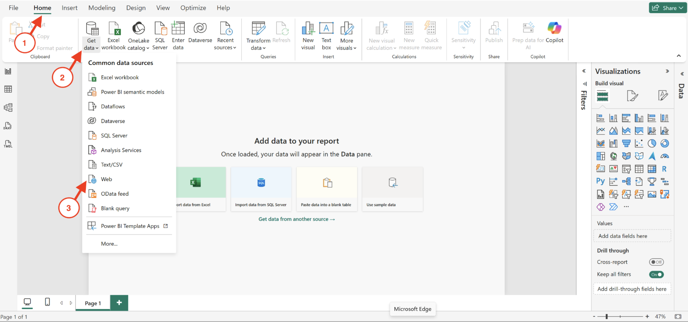
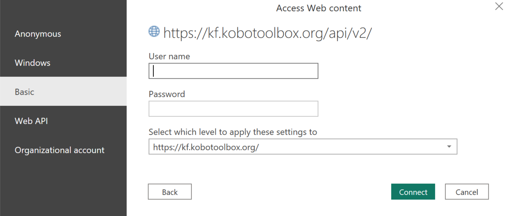
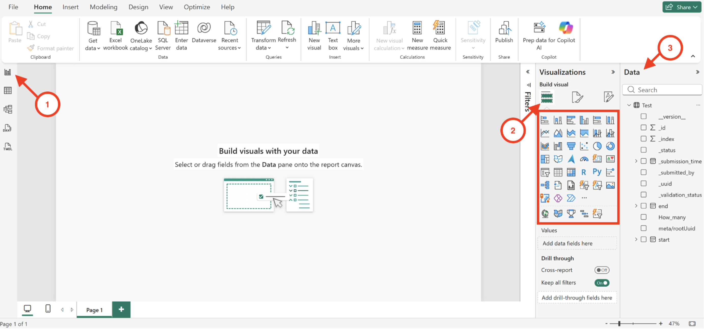
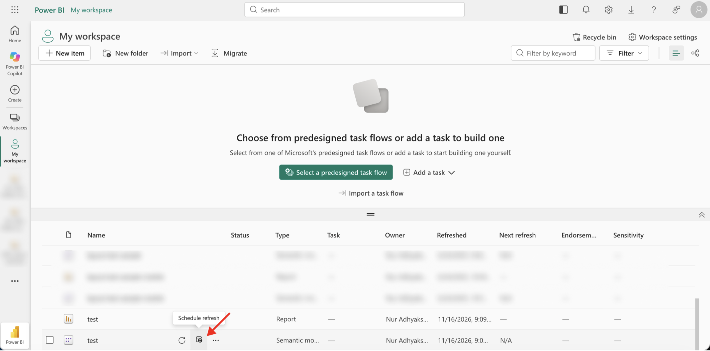

Search the knowledge base, browse our resources, and visit our Community Forum for more detailed information
Last updated: 19 Nov 2026
KoboToolbox allows you to connect project data directly to Microsoft Excel and Power BI using the KoboToolbox Application Programming Interface (API). This allows you to retrieve updated submissions for analysis, reports, and dashboards without manually downloading new data files.
Microsoft Excel is a spreadsheet application for organizing and analyzing data, while Power BI is a business intelligence application for creating interactive reports and dashboards.
Both applications support synchronous export links to connect to KoboToolbox. Once connected, you can refresh your data to retrieve new submissions, edits, and other changes made to your project.
This article covers connecting KoboToolbox data to Excel and Power BI, preparing imported data, refreshing your connection, and troubleshooting common issues.
Note: The steps in this article are intended for Windows users. Power BI Desktop is only available for Windows, and the web data connection features described here are designed for Excel on Windows. Excel for Mac supports Power Query, but some connection options and features differ.
Before connecting KoboToolbox to Excel or Power BI, you need a synchronous export link for your project.
A synchronous export link allows external applications to retrieve project data in CSV or XLSX format using saved export settings. The link remains the same over time, but the data is updated when the external application refreshes its connection.
To generate and retrieve your link, follow the instructions in Using the API for synchronous exports.
Excel and Power BI use Power Query to connect to external data sources. The connection process is similar in both applications, with some differences in how you access and load the data.
To connect your KoboToolbox project:
Open Microsoft Excel or Power BI Desktop.
In Excel, open a blank workbook or an existing workbook.
In Power BI Desktop, open a blank report or an existing report.
Open the web data connector:
In Excel, go to Data > Get Data > From Other Sources > From Web.
In Power BI, go to Home > Get data > Web.
Select Basic in the web connection window, if prompted to choose a URL entry method.
Paste the synchronous export link you retrieved from KoboToolbox.
Click OK.

If your KoboToolbox project is private, you must authenticate the connection to access its data.
In the authentication window, select Basic as the authentication method.
Enter your KoboToolbox username and password.
Select the appropriate URL level for applying your credentials.
Click Connect.
Excel or Power BI will then connect to your KoboToolbox project and retrieve the available data.

Note: If your project is public, you can select Anonymous instead of Basic authentication. However, making a project public allows anyone with the appropriate link to access its submissions.
Once connected, Excel or Power BI will display your data in the Navigator or Power Query Editor, depending on the export format and how the data is recognized.
If you are using an XLSX export, your project data may appear as multiple tables or sheets. If applicable, each repeat group is included in a separate sheet.
To prepare your data:
Select the table or sheet you want to import. If available, enable Select multiple items to import more than one table.
Click Transform Data to open the Power Query Editor.
Review the imported data and make any necessary adjustments, such as:
Removing unnecessary columns.
Renaming columns.
Changing data types.
Filtering records.
Expanding nested columns or converting structured data into tables, if needed.
When your data is ready:
In Excel, click Close & Load to load the data into your workbook.
In Power BI, click Close & Apply to load the data into your report.
You can now use the imported data to create tables, charts, reports, and dashboards.
Note: You can connect multiple KoboToolbox projects to the same Excel workbook or Power BI report. Repeat the connection process for each project using its synchronous export link.
After importing your KoboToolbox data, you can use the available tools in Excel or Power BI to analyze and visualize your results.
Excel allows you to organize imported data into tables and create summaries using PivotTables and PivotCharts.
If your data was loaded into the Power Query connection without appearing in a worksheet, you can load it manually:
Go to Data > Queries & Connections.
Right-click the query you want to load.
Select Load To….
Choose Table and select the worksheet where you want to display the data.
Click OK.
You can also use PivotTables to summarize your project data:
Go to the Insert tab.
Select PivotTable.
Choose From External Data Source.
In the window that appears, select Choose Connection.
Select the connection associated with the query you created.
Choose where you want to place the PivotTable and click OK.
Use the PivotTable Fields pane to select the variables you want to analyze.
For more information about creating PivotTables, see Microsoft's Excel documentation.
Power BI allows you to build interactive reports and dashboards using your imported KoboToolbox data.
After loading your data:
Open the Report view.
Select a visualization type, such as a bar chart, table, or map.
Add fields from your imported KoboToolbox data.
Customize the visualization as needed.

If your project includes multiple tables, such as repeat group data, you may need to establish relationships between them before combining their fields in visualizations.
To manage table relationships, go to Model view and create relationships using the appropriate identifiers.
When new submissions are received or existing records are edited or deleted in KoboToolbox, you need to refresh your connection in Excel or Power BI to retrieve the updated data.
Refreshing retrieves the latest available export from KoboToolbox without requiring you to generate a new export link.
To refresh your data manually:
Open your Excel workbook.
Go to the Data tab.
Click Refresh All to update your connected queries.
You can also configure some Power Query connections to refresh when the workbook opens or at regular intervals through the connection properties.
To refresh your data manually in Power BI Desktop:
Open your Power BI report.
Go to the Home tab.
Click Refresh.
Power BI will retrieve the latest available data from your KoboToolbox connection.
You can also configure scheduled refreshes through the Power BI service after publishing your report. To configure scheduled refreshes in Power BI:
In Power BI Desktop, go to the Home tab and click Publish to publish your report.
Open the Power BI service and sign in using the same account you used to publish the report.
Go to Workspaces and open the workspace containing your published report.
In the workspace, find the item with the same name as your report and Semantic model in the Type column.
Click the Schedule refresh icon next to the semantic model to open its refresh settings.
Configure the data source credentials, if required.
Under Refresh, enable scheduled refresh, select the refresh frequency, and set your preferred refresh times.
Click Apply to save your settings.

The number of scheduled refreshes available depends on your Power BI license and capacity. For example, Power BI Pro supports up to eight scheduled refreshes per day.
Note: Synchronous exports are cached for up to five minutes, so new submissions may not appear immediately after refreshing. Refreshing Excel or Power BI does not bypass this interval.
Did you find what you were looking for? Was the information clear? Was anything missing?
Share your feedback to help us improve this article!